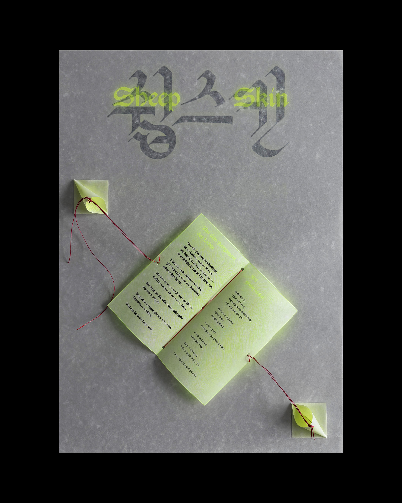

빛의 양피지 위에서

빛의 양피지 위에서는 양피지의 성질을 물려받은 종이 쉽스킨의 가능성을 디자이너의 입장에서 해석한 시이자 포스터입니다.
시중에서 접할 수 있는 대부분의 반투명 종이는 차갑고 딱딱한 산업적 느낌이 강합니다. 반면 쉽스킨은 반투명하면서도 자연스러운 질감과 부드러운 촉감을 지녀, 그 가능성이 무궁무진합니다. 양피지를 떠올리게 하는 불규칙한 패턴은 수공예 인쇄물과도 잘 어울리지요.

빛의 양피지 위에서는 양피지의 성질을 물려받은 종이 쉽스킨의 가능성을 디자이너의 입장에서 해석한 시이자 포스터입니다.
시중에서 접할 수 있는 대부분의 반투명 종이는 차갑고 딱딱한 산업적 느낌이 강합니다. 반면 쉽스킨은 반투명하면서도 자연스러운 질감과 부드러운 촉감을 지녀, 그 가능성이 무궁무진합니다. 양피지를 떠올리게 하는 불규칙한 패턴은 수공예 인쇄물과도 잘 어울리지요.